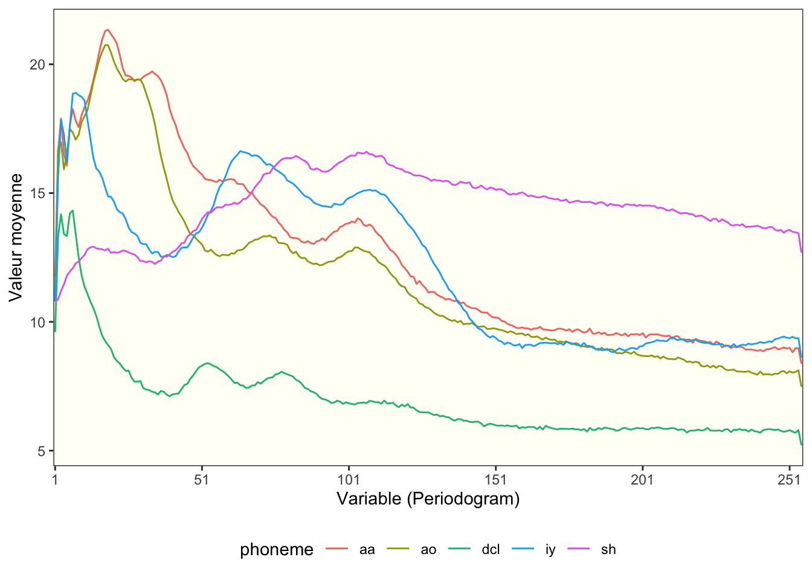
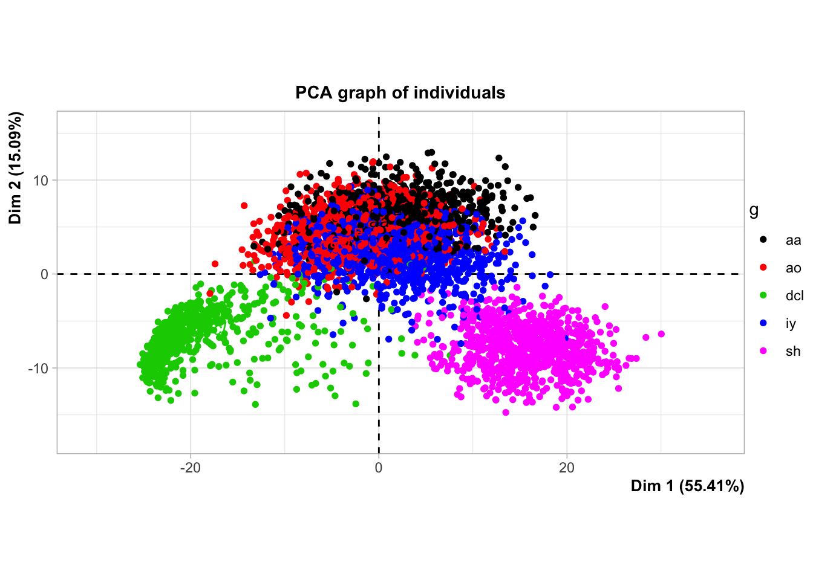
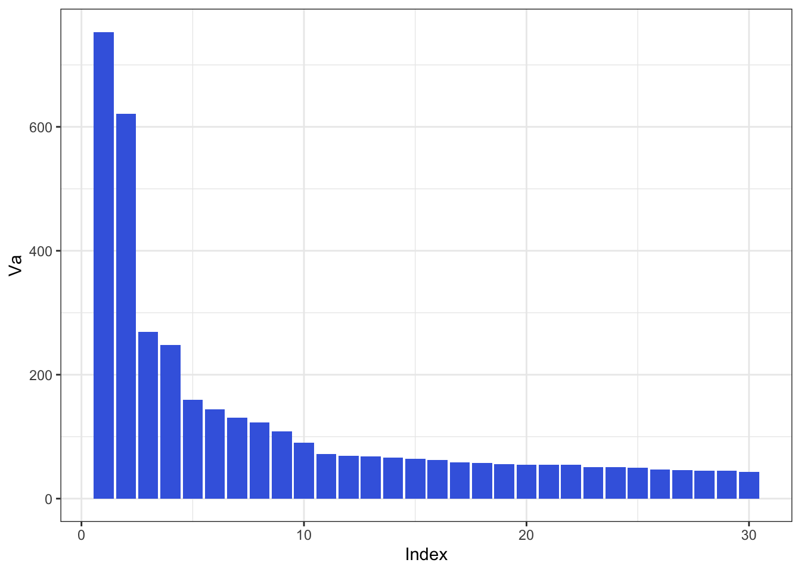
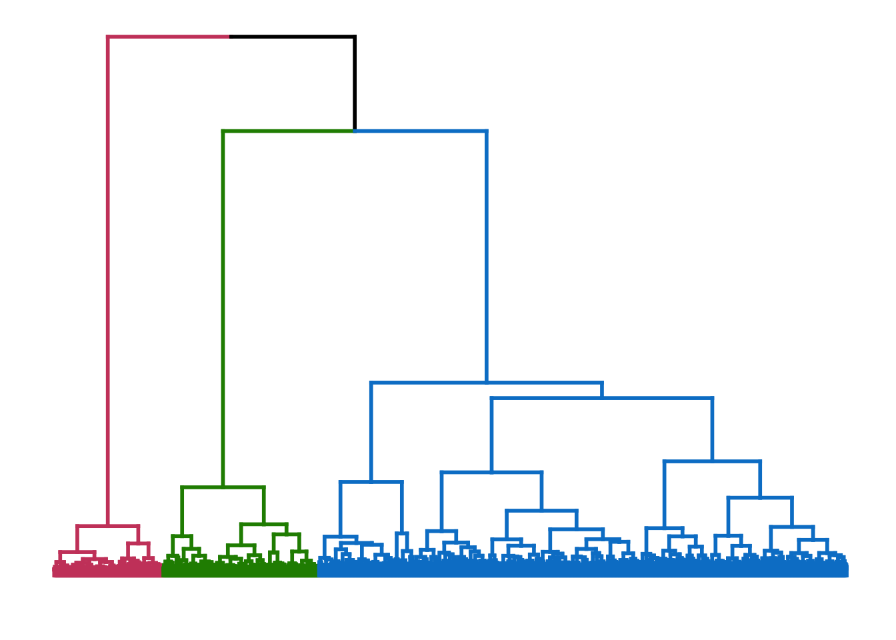
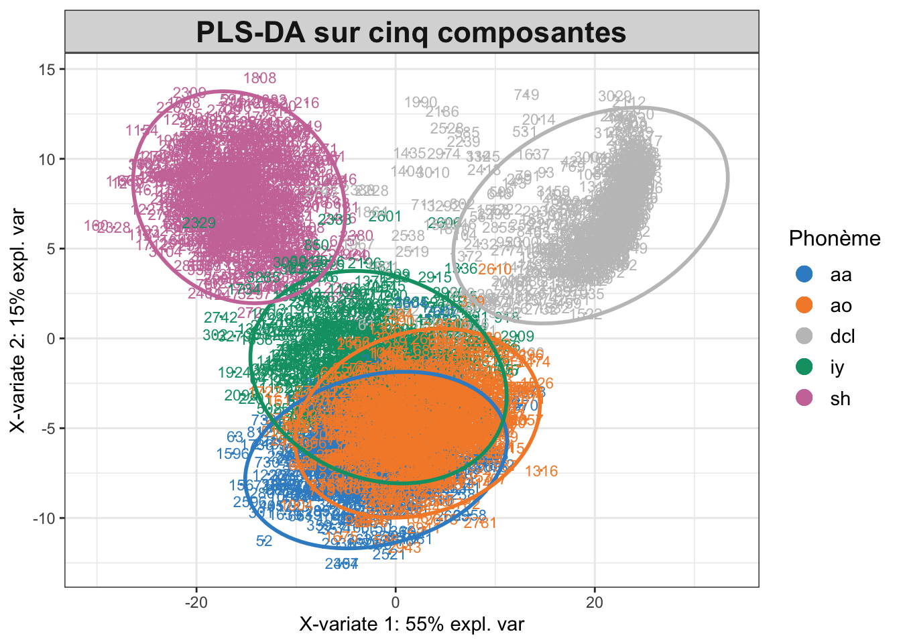
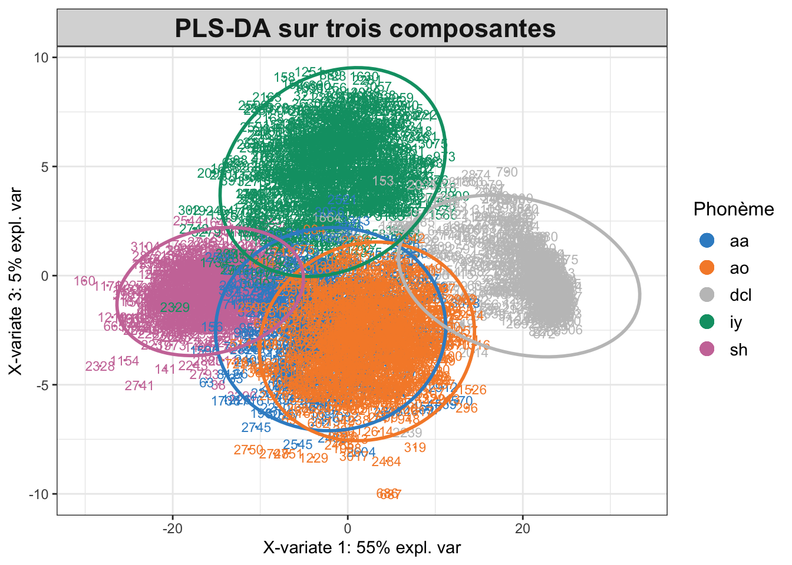
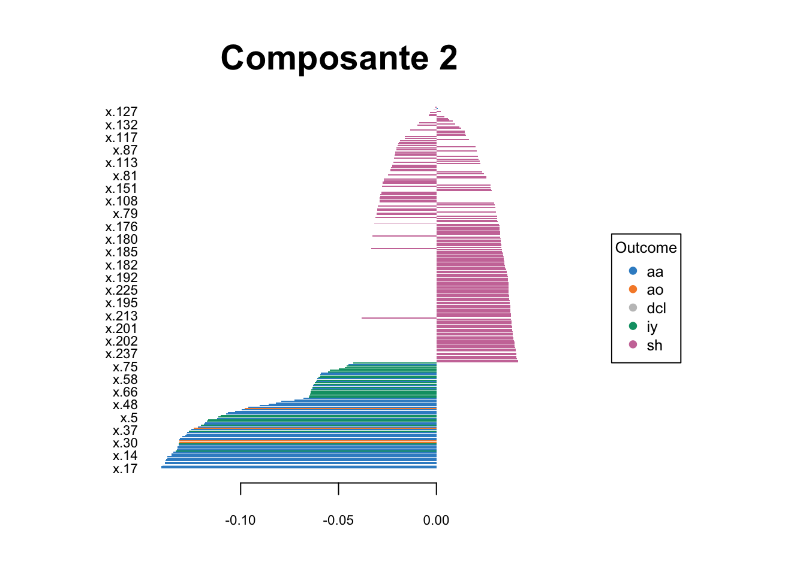
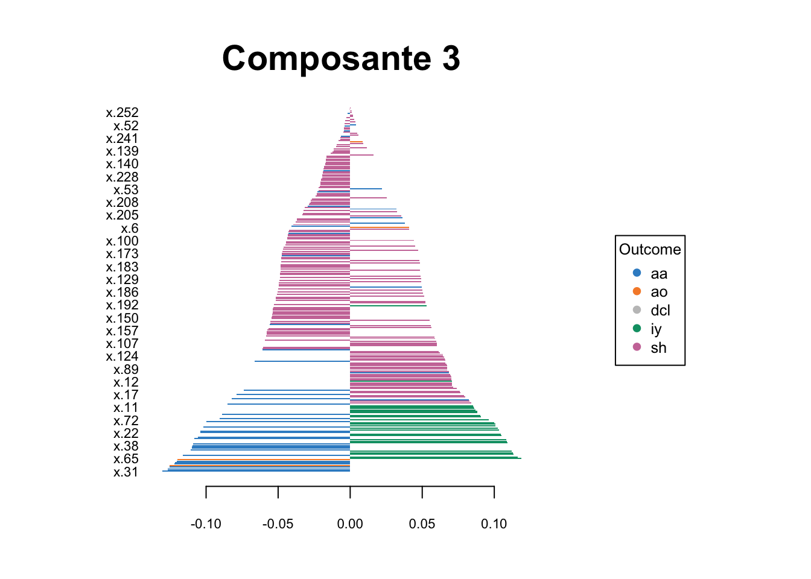

Les données présentées proviennent de l’ouvrage de référence intitulé “Elements of Statistical Learning” de Hastie, Tibshirani et Friedman (2009). Elles concernent l’analyse des phonèmes et ont été extraites de la base de données TIMIT, qui est une ressource largement utilisée dans la recherche en reconnaissance vocale. Le phonème est l’unité sonore de base de la langue parlée. C’est la plus petite unité distinctive de son qui permet de distinguer un mot d’un autre dans une langue donnée. Le but du projet est de discriminer cinq phonèmes, transcrits comme suit : sh pour “she”, dcl pour “dark”, iy pour la voyelle dans “she”, aa pour la voyelle dans “dark”, et ao pour la première voyelle dans “water”.
Le corpus de données se compose de 50 discours enregistrés, à partir desquels ont été sélectionnées 4509 trames vocales d’une durée de 32 ms, comportant environ deux exemples de chaque phonème pour chaque locuteur. Le tableau de données obtenu contient 4509 lignes et 256 colonnes, intitulées “x.1” - “x.256”, qui correspondent aux valeurs du log-périodogramme mesurées sur les différentes trames. Les deux dernières colonnes indiquent le phonème prononcé et le locuteur. Chaque trame est identifiée comme appartenant à l’ensemble d’apprentissage (train) ou de test (test), en fonction de la colonne locuteur. Pour faire plus simple, nous pouvons dire que chaque ligne représente une trame vocale et que l’ensemble des colonnes représentent le spectre sonore de chaque trame. Ainsi, nous retrouvons 256 colonnes car le periodogramme s’étends sur une plage de 256 Hz. Par ailleurs, nous pouvons préciser que sur les 4509 observations, 25.8% d’entre elles sont iy, 15.4% sont aa, 19.3% sont sh, 22.7% sont ao et 16.8 sont dcl.
Statistiques descriptives
Étant donné que notre base de données comporte un nombre significatif de lignes et de colonnes, il n’est pas judicieux d’effectuer une analyse descriptive détaillée pour chacune de nos variables. Néanmoins, nous pouvons opter pour la projection des cinq phonèmes distincts afin d’obtenir une première impression des similarités potentielles entre chaque phonème. En examinant les valeurs moyennes projetées de chaque phonème sur le périodogramme, nous pouvons observer certaines tendances dans les comportements acoustiques. Il est notable que l’intensité moyenne de chaque phonème est plus élevée dans les basses fréquences, situées au début du spectre sonore. Concernant les raisons de cette observation, il est possible d’émettre l’hypothèse que cela soit dû au fait que les phonèmes étudiés sont des voyelles. Par ailleurs, le phonème dcl semble se distinguer des autres, se caractérisant par des niveaux d’intensité plus faibles dès le début du spectre, comparativement aux autres phonèmes. Ce dernier est notamment opposé au phonème sh en termes d’intensité sonore.
Code
ggplot(mean_data, aes(x = variable, y = value, color = phoneme, group = phoneme)) +geom_line() +scale_x_discrete(breaks =seq(1, nrow(phoneme_stats[[1]]), by =50), labels =seq(1, nrow(phoneme_stats[[1]]), by =50)) +theme_bw() +labs(x ="Variable (Periodogram)",y ="Valeur moyenne") +theme(legend.position ="bottom",panel.grid.major =element_blank(),panel.grid.minor =element_blank(),panel.background =element_rect(fill ="#FFFFF6"))

Figure 1: Log-periodogramme moyen par valeur et par phonème
Avec la fonction plot.PCA de la bibliothèque FactoMineR, nous sommes en mesure de représenter chaque observation sur un plan bidimensionnel et de regrouper les phonèmes par couleur. Dans ce contexte, la Figure 2 nous permet de confirmer que chaque phonème occupe effectivement la même position dans le spectre sonore. Ce graphique nous permet également de différencier clairement les phonèmes les uns des autres. Par exemple, il est possible de constater que les sons sh et dcl sont situés à des extrémités opposées. Nous observons également que les voyelles aa, ao et sh sont très proches les unes des autres, indiquant que ces trois phonèmes présentent des similarités en termes de fréquence sur le périodogramme.

Figure 2: Projection graphique des individus
Classification
La classification a pour objectif de diviser un ensemble de données en groupes distincts et homogènes. Ces groupes, souvent appelés clusters, se composent d’éléments présentant des caractéristiques similaires. Dans cette étude, nous utiliserons une classification hiérarchique pour partitionner notre base de données en divers ensembles. Cette classification reposera sur la méthode de Ward, l’une des méthodes les plus populaires, permettant notamment de minimiser l’inertie intra-classe et de maximiser l’inertie inter-classe. Cette approche nous permettra, in fine, d’obtenir des sous-ensembles plus homogènes. Le diagramme à barres et le dendrogramme de la figure Figure 3 révèlent trois partitions, c’est-à-dire trois classes. En effet, nous pouvons observer trois sauts d’inerties, ou trois coudes, indiquant une séparation naturelle en trois groupes.
Code
ggplot(barplot_df, aes(x = index, y = height)) +labs(x ="Index",y ="Va") +geom_bar(stat ="identity", fill ="royalblue") +theme(panel.grid.major =element_blank(),panel.grid.minor =element_blank(),panel.background =element_rect(fill ="#FFFFF6")) +theme_bw() ggplot(color_branches(arbre, k =3), labels =FALSE)

(a) Barplot

(b) Dendrogramme
Figure 3: Barplot et Dendrogramme
A priori, notre échantillon se divise en trois groupes distincts. Par conséquent, nous pouvons effectuer une coupe de l’arbre de classification hiérarchique afin d’obtenir trois clusters. Après le calcul des centres de gravité, nous appliquons la méthode des k-means en utilisant l’algorithme de MacQueen. Ces calculs nous permettent d’identifier trois clusters constitués comme ci-dessous.
Table 1: Répartition des phonèmes dans les différents clusters (en %)
Phonèmes
Clust. 1
Clust. 2
Clust. 3
aa
1.0
24.6
0.2
ao
0.6
35.9
1.9
dcl
0.4
1.5
97.6
iy
9.5
37.6
0.4
sh
88.5
0.3
0
La Table 1 indique comment chaque phonème est réparti. Nous observons que le premier cluster est majoritairement composé du phonème sh avec 88,5% des observations. Le second, le plus important en termes d’effectif, est principalement constitué des phonèmes aa, ao et iy. Enfin, le troisième cluster se compose presque exclusivement du phonème dcl avec 97,6% des observations. Ainsi, le clustering effectué confirme les premières observations faites dans la partie statistiques descriptives : nous identifions bien trois groupes distincts, dont trois phonèmes partageant des caractéristiques très similaires entre eux et deux autres possédant leurs propres spécificités. Pour vérifier si les associations entre les clusters et les phonèmes sont significatives, nous pouvons utiliser le test du \(\chi2\). En effectuant le test à l’aide de la commande chisq.test sur le logiciel R, nous obtenons une p-value inférieure à 0,05. Par conséquent, nous pouvons conclure qu’il existe une association significative entre les phonèmes et les clusters. En ce qui concerne l’interprétation des clusters, nous pouvons faire certaines hypothèses. Par exemple, le premier cluster pourrait être associé à des phonèmes “chuchotés” ou prononcés avec une certaine réserve. Le deuxième cluster pourrait correspondre à des phonèmes “vibrants” ou “nasalisés”, qui présentent des caractéristiques acoustiques similaires en termes de fréquence. Le troisième cluster pourrait être associé à des phonèmes prononcés avec une certaine emphase ou une accentuation particulière.
Discrimination
Le but de cette partie va être de mener une analyse discriminante sur nos phonèmes. Très simplement, l’analyse discriminante est une méthode statistique utilisée pour trouver les caractéristiques qui différencient le mieux des groupes d’observations. Ici, notre objectif va donc être de trouver les fréquences acoustiques qui permettent de différencier au mieux les différents phonèmes. Mieux différencier les phonèmes peut nous permettre in fine d’améliorer nos connaissances dans le domaine de la reconnaissance vocale. Pour effectuer cette discrimination, nous utiliserons deux méthodes, l’analyse factorielle discriminante et la PLS DA.
Analyse Factorielle discriminante
L’analyse factorielle discriminante (AFD) est une méthode statistique qui permet d’identifier les fréquences acoustiques discriminantes pour les différents phonèmes. Pour mener à bien cette technique, les données sont divisées en deux échantillons. Ensuite, le modèle est entraîné à l’aide de la fonction lda du package MASS. Afin d’estimer la précision du modèle, il est possible de le tester sur l’échantillon test et d’obtenir une matrice de confusion (Table 2 ). Cette matrice permet de visualiser la répartition des phonèmes entre leurs classes initiales et les classes prédites par le modèle. Les résultats montrent que le modèle est assez précis, à l’exception des phonèmes aa et ao qui présentent un taux d’erreur d’environ 20%, tandis que tous les autres phonèmes ont un taux d’erreur proche de 1%. Ces résultats sont confirmés par la précision globale du modèle, qui s’élève à 93%.
Table 2: Matrice de confusion de l’AFD
Classe Prédite
aa
ao
dcl
iy
sh
aa
106
30
0
0
0
ao
33
186
0
0
0
dcl
0
0
182
2
0
iy
0
0
3
259
0
sh
0
0
1
0
200
Variables les plus discriminantes
A présent, nous procédons à l’identification des phonèmes les plus discriminants. En obtenant les scores d’importance des variables, nous observons que les dix phonèmes les plus discriminants se situent presque tous autour de la fréquence x20 (Table 3). Nous pouvons ainsi affirmer que les fréquences basses, c’est-à-dire celles du début du spectre, sont les plus importantes pour distinguer les différents groupes de phonèmes dans notre jeu de données. Nous pouvons émettre l’hypothèse que les caractéristiques acoustiques des phonèmes peuvent varier en fonction de l’articulation et de la position dans la parole. Les fréquences basses pourraient ainsi refléter des aspects importants de l’articulation, tels que la manière dont les cordes vocales vibrent ou la manière dont les cavités buccales et nasales modifient les sons produits. Ces fréquences basses pourraient donc fournir des informations cruciales pour différencier les phonèmes.
Table 3: Les 10 fréquences les plus discriminantes
Variables
coef
importance
x.17
-0.1435770
0.0206144
x.18
-0.1326711
0.0176016
x.19
-0.1185520
0.0140546
x.20
-0.1125399
0.0126652
x.12
0.1018741
0.0103783
x.9
0.0883249
0.0078013
x.16
-0.0865254
0.0074866
x.35
-0.0821173
0.0067433
x.10
0.0802089
0.0064335
x.11
0.0750107
0.0056266
Pour conclure avec cette méthode, nous avons tenté d’utiliser la méthode LASSO (Least Absolute Shrinkage and Selection Operator) pour sélectionner les variables les plus pertinentes pour la classification. Malheureusement, nos résultats ont indiqué que le processus de sélection de variables n’avait pas d’impact significatif sur la performance du modèle.
PLS-DA
La deuxième méthode d’analyse supervisée que nous avons utilisée pour cette étude est la PLS-DA. Cette analyse est intéressante et vient compléter l’AFD, car elle nous permet de prendre en compte la corrélation qui peut exister entre les différentes caractéristiques acoustiques de nos phonèmes. De plus, la PLS-DA permet de prédire la classe d’un nouvel individu en fonction de ses caractéristiques acoustiques. Dans le cas de l’analyse des phonèmes, cela peut être utile pour identifier la classe d’un phonème inconnu à partir de ses caractéristiques acoustiques. Pour réaliser notre PLS-DA, nous avons utilisé uniquement le package Mix0mics de R. Comme pour l’AFD, nous avons commencé par définir deux échantillons, un d’apprentissage et un d’entraînement. Ensuite, nous avons utilisé la fonction plsda avec l’échantillon d’apprentissage pour estimer un premier modèle. Notons que ce modèle est effectué sur cinq composantes pour les cinq phonèmes. À la suite de ce premier modèle, nous avons obtenu un graphique relativement similaire à ce qui avait pu être fait dans notre partie d’analyse de données. Cependant, en utilisant la validation croisée, nous avons déterminé un nombre optimal de trois composantes. La Figure 4 nous donne une représentation graphique de la PLS-DA effectuée. Nous pouvons observer que mise à part les phonèmes aa et ao, les trois autres phonèmes arrivent bien à se détacher et à se regrouper entre eux par rapport à la première PLS-DA effectuée sur cinq composantes.
Code
# Visualisation des individus dans l'espace des trois premières composantes principalesplotIndiv(plsda_res5, group = Y_train, legend.title ="Phonème", ellipse =TRUE, legend =TRUE,title ="PLS-DA sur cinq composantes")plotIndiv(plsda_res3, comp =c(1,3), group = Y_train, legend.title ="Phonème", ellipse =TRUE, legend =TRUE,title =" PLS-DA sur trois composantes")

(a) 5 composantes

(b) 3 composantes
Figure 4: Représentations graphiques des PLS-DA
Mesures de performances
Afin d’évaluer la performance du modèle, nous avons procédé à une prédiction sur l’échantillon test. La mesure utilisée pour cette prédiction est la distance de Mahalanobis, qui permet d’évaluer la similarité entre deux observations en prenant en compte leur corrélation. Dans le cadre de notre étude, cette distance indique un taux de classification correcte de 0,7197, soit 71,97% d’observations correctement classées en fonction de leur groupe d’appartenance. Comme pour l’analyse factorielle discriminante, une matrice de confusion a été construite à partir de l’échantillon test. Cette matrice révèle un taux d’erreur de 22%, ce qui indique une précision moindre du modèle. Ce taux d’erreur est dû à la difficulté pour le modèle à distinguer les différences entre les deux phonèmes les plus proches, à savoir aa et ao.
Contribution aux composantes
Enfin, pour compléter l’analyse, nous avons décidé de projeter les fréquences acoustiques ayant le plus d’importances dans la formation de nos trois composantes (Figure 5). Les fréquences acoustiques les plus discriminantes pour la composante 1 sont celles qui se trouvaient à droite du spectre acoustique et qui correspondaient au phonème sh. Les fréquences les plus discriminantes pour les composantes 2 et 3 sont les fréquences les plus basses, correspondant respectivement aux phonèmes aa, ao et iy. Cependant, aucune des variables correspondantes n’a contribué négativement à la composante 2, alors que le phonème iy a contribué positivement à la composante 3. Ainsi, il semble que les fréquences basses soient importantes pour la discrimination des phonèmes, en particulier pour les phonèmes aa, ao et iy. En revanche, les fréquences les plus élevées du spectre acoustique semblent être importantes pour la discrimination du phonème sh. Ces résultats sont cohérents avec la littérature sur la perception des phonèmes, qui indique que les fréquences basses peuvent être importantes pour la reconnaissance des phonèmes, en particulier pour les voyelles.
Code
# Visualisation des individus dans l'espace des trois premières composantes principalesplotLoadings(plsda_res3, comp =1, method ='median', contrib ="max", title ="Composante 1")plotLoadings(plsda_res3, comp =2, method ='median', contrib ="max", title ="Composante 2")plotLoadings(plsda_res3, comp =3, method ='median', contrib ="max", title ="Composante 3")
(a) Composante 1

(b) Composante 2

(c) Composante 3
Figure 5: Contributions des individus aux trois composantes
Conclusion
En utilisant des méthodes de statistiques et d’analyse de données, l’objectif de cette étude était de mieux comprendre les liens entre les phonèmes et les fréquences sonores. Dans la première partie, une analyse de statistique descriptive a été réalisée pour distinguer trois groupes de phonèmes. À l’aide du graphique des individus et du periodogramme, des similitudes ont été observées entre les phonèmes aa, ao et iy, ainsi qu’une opposition entre les phonèmes dcl et sh. Ces observations ont été confirmées par notre classification qui a permis de dégager trois clusters distincts. En accord avec l’analyse préliminaire, le cluster 1 était majoritairement composé du phonème sh, le cluster 2 était majoritairement composé des phonèmes aa, ao et sh, et enfin, le cluster 3 était composé en grande partie du phonème dcl.
Ensuite, une analyse discriminante a été réalisée pour identifier les fréquences sonores qui permettaient de discriminer au mieux les différents phonèmes. L’analyse discriminante factorielle a montré que ce sont les fréquences les plus basses qui semblaient discriminer au mieux les différents phonèmes. Cette observation est en accord avec l’analyse du periodogramme qui montrait que le niveau des fréquences était en moyenne plus élevé au début du spectre sonore. Bien que ces observations ne permettent pas de tirer des conclusions certaines, il est possible que ces résultats soient dus au fait que tous les phonèmes étudiés sont des voyelles.
Enfin, pour compléter notre analyse discriminante, une analyse PLS-DA a été effectuée. Les résultats de cette PLS-DA ont confirmé que les fréquences les plus basses pouvaient être un facteur discriminant pour l’identification des phonèmes, en particulier pour les phonèmes les plus similaires, tels que aa, ao et iy. Cependant, les performances de la PLS-DA se sont avérées moins robustes que celles de l’AFD. Dans le cadre de cet échantillon, il est donc possible que l’AFD soit suffisante pour obtenir une bonne discrimination.
Discussion
Si dans cette étude, nous avons identifié les fréquences basses comme étant un élément clé pour discriminer les phonèmes, il est utile de préciser que ces caractéristiques acoustiques ne sont pas les seules à pouvoir les discriminer. D’autres caractéristiques telles que la durée du phonème ou les transitions de fréquences entre les phonèmes peuvent également jouer un rôle important dans la reconnaissance vocale. Dans cette étude, nous avons dû faire avec les données qui nous étaient fournis, ainsi les résultats pourraient s’avérer différents avec un autre échantillon de phonèmes. De plus, il faut tenir compte du fait que ces résultats ne sont pas forcément généralisable à d’autres langues et populations.